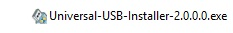

Go to www.ubuntu.com and chose download Ubuntu Server. I use the version 18.04.5 LTS. You can chose Option 3 -> Altenative downloads -> Get the previous LTS.
Go to www.virtualbox.org then Downloads (left pane) Click download VirtualBox-6.1.16 file for Windows hosts or MacOS hosts (depending on the system you are using). Next, download Oracle VM VirtualBox Extension Pack (for all platforms).
Go to downloads folder and check to make sure you have the software needed:
Click to run the Oracle_VM_VirtualBox_Extension_Pack file. This will open the Virtual Box. Accept the defaults and the legal agreement.
Open VirtualBox. Click Machine/New. Give a name to your machine (ex: admin). Type: Linux and chose default settings. Memory size: chose around to the green line (required) - check how much memory you have available). Hard disk: Create a virtual hard disk now, Accept default VDI (VirtualBox disk image) Storage on physical hard disk: fixed size (you can also chose dynamically allocated) File location and size: chose as required and depending on your available memory. Click create.
Next, go to Settings/Network: Check Enable adaptor. Change Nat to Bridge Adaptor. (The adaptor now will get an IP address on the same network as your computer, instead of using Nat)To start the installation of Linux server VM, click Start/Empty. Select the ubuntu.iso file that you downloaded. (a virtual cd)
Note: Ubuntu iso image is a single file that can be burned on physical dvd or can be used to create a bootable usb flash drive (see below).
Click start. Use the arrow keys to make selections. Chose language, select Ubuntu Server. It's detecting the (virtual) hardware, loading the drivers needed for the boot process, configuring the network. Choose host name (Linux Server), continue, Add user : admin, create a password. Don't use encryption, continue. Partitioning method: use entire disk ( without LVM), format the hard disk (yes) Finish partitioning and write to disk. HTP proxy: none Install security updates automatically Chose software to install: Select Open SSH server (unselect default Standard sys utilties) Accept default (Yes) to install boot loader on the master boot record. Continue.
If the installation is successful you will see a Log In Prompt. Enter with your username and password.
To install Linux on your computer you will need a bootable live USB flash drive. To create one, download the UUI (Universal USB Installer) that is an open-source live Linux USB flash drive creation software.
Next, run the Universal USB Installer.exe file then select the Ubuntu ISO image previously downloaded. After completition you have a bootable USB Flash Drive with Ubuntu sever on it.
Insert the bootable USB Flash Drive in your computer to start the Linux Server installation process. In order to boot your computer from the bootable flash drive, you will have to reach the boot options screen on your PC. This varies with the PC manufacturer and model of the computer. You might have to Press Esc key a few times and one of the function keys F9 or F10. From the boot option select Flash Drive and the installation will start. The rest of Linux server installation is similar to the above steps in the creating a Linux server VM.
Adding users. To add a new user named Cali, type the Linux command: sudo adduser Cali. It prompts you to create a password for Cali and add its info. To check if the user Cali is added, type the Linux command: cat /etc/passwd (to read passwd file). At the bottom of this file are listed users.
To remove user Cali, type Linux command: sudo userdel Cali. You can check that Cali is removed by reading the passwd file again. However, the data associated with user is not removed. If you type the Linux command: cd /home. Followed by the command: ls -al. You can see that Cali's home directory is not deleted.
To remove Cali's data type Linux command: sudo rm -R Cali. (R for remove recurrsively).
We need to use sudo to execute commands such as: add and remove users, set the rights of all the other users, install software or configure, maintain the server. Note that only the system admin - the user who installed the software gets automatically the root rights.
First you must get your IP address. Type the Linux command: ifconfig -a. Under emp0s3, find inet 10.1.1.. (or inet 192.168..). Write down your IP address: 10.1.1... (or 192.168..)
To access reemotely Linux server on a Windows machine download PuTTy from www.putty.org. Open PuTTy, enter your IP address, port 22, SSH. Click Open and you are prompted to log in remotely to your Linux server.
To access reemotely Linux server on a Mac use the Terminal (In the menu bar, click Go/Applications/Utilities/Terminal). Open Terminal and type ssh space IP_address. And you will be prompted to log in remotely to your Linux server. .
To see who is logged in your machine, type the Linux command: who
To kill a remote login session, check all your running processes by typing the Linux command: ps -fu username . Look up the PID for the process, then type the Linux command kill - HUP PID_number. That sends a SIGHUP signal to a login shell that allows the application to exit properly.
If your Firefox browser is unresponsive type the command: pidof firefoxto get the PID then type kill- PID_number. Alternatively, you can combine the two commands into one: kill -9 $(pidof firefox) to find PID and kill it.
Linux has a package store similar to the mobile app stores.\\ (In fact, mobile app stores were modeled after Linux package-management system.)
Ubuntu (Debian) package files have the extension .deb and they exist in repositories. Packages use dependencies, which are additional packages required. Ubuntu uses apt (Advanced Packaging Tool) for package management.
The apt command-line tool is intended to be used interactively, while the apt-get command should be used in scripts. For basic commands the two are identical.The apt package index is a database of available packages from the repositories. To update the apt package index type sudo apt update. To delete a repository type sudo nano /etc/apt/sources.list to open /etc/apt/sources.list file, then comment or remove the repo entry. Save and close the /etc/apt/sources.list file.
Nano is a text editor (see below)
You may look for the repository into the /etc/apt/sources.list.d directory. Just type cd /etc/apt/sources.list.d then ls -al. Simply delete it using the command sudo rm.
To remove gpg keys, type sudo apt-key list to list them all, then use the command apt-key del followed by the last 8 char of the repository key
The best way to edit files on Ubuntu Server is using nano and vim. Nano is easy to learn. To create or edit text file using nano just type nano filename
To create/edit a file using vim type vim filename. Then Press i to enter insert mode. Type text, when done, press ESC for command mode and type :wq! to save the file and exit vim.
Vim is the most popular among Linux admins and developers.With vim you can do amazing things if you learn its ways.
Type sudo ufw app list . It shows that OpenSSH is an application registered with UFW. To allow SSH connections type sudo ufw allow OpenSSH. To enable UFW, use the command sudo ufw enable. That sets up a firewall rule that allows SSH connections.
The firewall is now active. Run sudo ufw status verbose command to see the rules that are set.
The command sudo ufw app list allows you to see the available connections. You have OpenSSH and Nginx.You may want to allow connections that your server needs to respond to by specifying a port or known service.
For example, type sudo ufw allow OpenSSH to allow remote access and/or sudo ufw allow http or sudo ufw allow 80 to allow unencrypted web servers use or type sudo ufw allow 'Nginx HTTP'
To configure the Firewall to allow HHTPS secure traffic type sudo ufw allow 'Nginx Full' and delete the redundant Nginx HTTP sudo ufw delete allow 'Nginx HTTP'
To allow future connections. For example, to allow connections from a specific IP (eg your home IP) type sudo ufw allow from some_IP.
To check the list of current rules type sudo ufw status. You should see that HTTPS traffic is allowed.
Configure SSL for your Linux server.
SSL (Secure Socket Layer) is used for securing the data transfer between client and server. SSL uses port 443 instead of port 80.To set up another Ubuntu server, open your VirtualBox. Then before powering on your machine, right click on it and select clone.